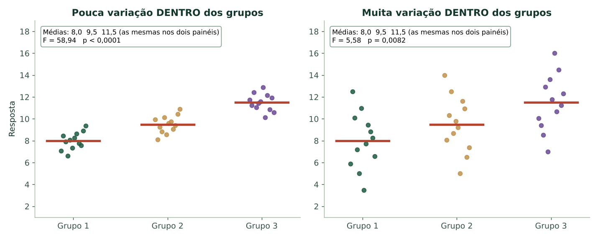
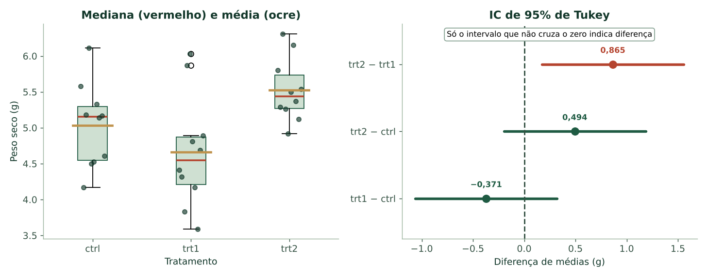

ANOVA de um fator
Compara as médias de três ou mais grupos independentes confrontando a variação entre os grupos com a variação dentro deles.
Comece por aqui
Com dois grupos, a comparação de médias é o teste t. Com três, a tentação é fazer três testes t — e aí mora o problema: cada teste tem 5% de chance de um falso positivo, e três testes elevam esse risco para cerca de 14%. A análise de variância resolve isso com uma única pergunta: a variação entre as médias dos grupos é grande demais para ser explicada pela variação que já existe dentro deles?
A análise de variância compara médias. O nome vem do método: a comparação é feita confrontando duas estimativas da variância — uma construída a partir das diferenças entre as médias dos grupos, outra a partir da dispersão interna de cada grupo.
O que é a ANOVA
A variação total dos dados é separada em duas parcelas que, somadas, a reconstituem por inteiro: a variação entre os grupos e a variação dentro deles. Se a hipótese nula for verdadeira, as duas parcelas, divididas por seus graus de liberdade, estimam a mesma variância populacional \(\sigma^2\), e a razão entre elas fica perto de 1. Quando os grupos realmente diferem, a parcela de cima cresce e a razão sobe.

Com \(k\) grupos há \(k(k-1)/2\) comparações. Para \(k=3\) são três testes, e a probabilidade de ao menos um falso positivo sobe de 5% para cerca de 14%; com \(k=5\) são dez testes e o risco chega a 40%. A ANOVA faz uma pergunta só, com o erro controlado em 5%.
Pressupostos e como verificá-los
| Pressuposto | Por que importa | Como verificar |
|---|---|---|
| Observações independentes | Sem isso, a estimativa do erro é inválida e nada funciona. | Delineamento; para medidas repetidas use ANOVA de medidas repetidas. |
| Resíduos aproximadamente normais | Garante a distribuição F da estatística. | shapiro.test(residuals(modelo)); gráfico Q-Q. Verifique nos resíduos, não nos dados brutos. |
| Variâncias homogêneas entre os grupos | O denominador de F é uma variância comum a todos. | Levene e Brown-Forsythe (car::leveneTest); razão entre a maior e a menor variância abaixo de 4. |
| Resposta quantitativa contínua | A média precisa fazer sentido. | Natureza da variável. |
| Ausência de observações muito influentes | Um só valor extremo pode inflar o QM do resíduo. | Gráfico de resíduos contra valores ajustados; distância de Cook. |
Com grupos de tamanhos iguais, a ANOVA tolera bem desvios moderados de normalidade e de homogeneidade. Com tamanhos desiguais, a heterogeneidade de variâncias é grave: veja a ficha da ANOVA de Welch, que mostra a taxa de erro real nesse caso.
Hipóteses e estatística de teste
Em que:
- \(k\)
- número de grupos
- \(n_i\)
- tamanho do grupo i
- \(N\)
- soma dos n_i
- \(y_{ij}\)
- observação j do grupo i
- \(\bar{y}_i\)
- média do grupo i
- \(\bar{y}\)
- média geral
- \(QM\)
- quadrado médio: soma de quadrados dividida pelos graus de liberdade
Exemplo numérico, passo a passo
Com os dados de PlantGrowth (três grupos, dez plantas cada, média geral 5,073 g):
| Grupo | n | Média (g) | Desvio-padrão | Variância |
|---|---|---|---|---|
| ctrl | 10 | 5,032 | 0,583 | 0,340 |
| trt1 | 10 | 4,661 | 0,794 | 0,630 |
| trt2 | 10 | 5,526 | 0,443 | 0,196 |
\[\begin{aligned}SQ_{\text{entre}} &= 10\bigl[(5{,}032-5{,}073)^2 \\ &\quad +(4{,}661-5{,}073)^2 \\ &\quad +(5{,}526-5{,}073)^2\bigr] \\ &= 3{,}7663,\end{aligned}\] com \(k-1=2\) graus de liberdade.
\[\begin{aligned}SQ_{\text{dentro}} &= 9\times(0{,}340+0{,}630 \\ &\quad +0{,}196) \\ &= 10{,}4921,\end{aligned}\] com \(N-k=27\) graus de liberdade.
\(QM_{\text{entre}}=3{,}7663/2=1{,}8832\) e \(QM_{\text{dentro}}=10{,}4921/27=0{,}3886\).
Confira a soma: \(3{,}7663+10{,}4921=14{,}2584=SQ_{\text{total}}\). A decomposição é exata, não aproximada.
Propriedades
- \(QM_{\text{dentro}}\) estima \(\sigma^2\) seja \(H_0\) verdadeira ou falsa; \(QM_{\text{entre}}\) só estima \(\sigma^2\) sob \(H_0\).
- Com k = 2, \(F=t^2\): a ANOVA reproduz exatamente o teste t de variâncias iguais.
- O teste é sempre unilateral à direita, embora a hipótese alternativa seja bilateral: só valores grandes de F contradizem H₀.
- A raiz de \(QM_{\text{dentro}}\) é o desvio-padrão residual, na unidade da resposta.
- Tamanho de efeito: \(\eta^2=SQ_{\text{entre}}/SQ_{\text{total}}\) (enviesado para cima) e \(\omega^2\) (corrigido). Referências de Cohen: 0,01 pequeno, 0,06 médio, 0,14 grande.
- Rejeitar H₀ não identifica os grupos responsáveis: isso exige comparações múltiplas ou contrastes.
Como interpretar os resultados
| Coluna | O que informa | Cuidado |
|---|---|---|
| Df | Graus de liberdade: k − 1 e N − k. | Confira se batem com o delineamento. |
| Sum Sq | Somas de quadrados. | A soma das duas é a variação total. |
| Mean Sq | Somas divididas pelos graus de liberdade. | O QM do resíduo estima σ². |
| F value | Razão entre os dois quadrados médios. | Perto de 1 não há sinal. |
| Pr(>F) | Valor-p. | Diz que existe diferença, não onde. |
| η² ou ω² | Proporção da variação explicada. | Reporte sempre junto com o valor-p. |
Depois de rejeitar: comparações múltiplas e contrastes
| Procedimento | Quando usar |
|---|---|
| Tukey (HSD) | Todas as comparações duas a duas, grupos de tamanhos iguais ou próximos. |
| Dunnett | Todos os tratamentos contra um controle, apenas. |
| Contrastes planejados | Perguntas definidas antes de ver os dados (controle contra a média dos tratamentos, por exemplo). |
| Bonferroni ou Holm | Poucas comparações escolhidas de antemão. |
| Scheffé | Qualquer contraste decidido depois de ver os dados; o mais conservador. |
| Games–Howell | Variâncias heterogêneas (ver ANOVA de Welch). |
Reporte: F com os dois graus de liberdade, valor-p, o quadrado médio do resíduo, o tamanho de efeito e o resultado das comparações múltiplas com as médias de cada grupo.
Como executar no R e em Python
Onde executar o código em Python
Não é preciso instalar nada: o Google Colab é um computador na nuvem, gratuito, que executa Python pelo navegador e já traz as bibliotecas usadas aqui (numpy, scipy e matplotlib).
aov() e TukeyHSD() pertencem ao pacote stats, já instalado com o R. car::leveneTest() fornece Levene e Brown-Forsythe; multcomp::glht() permite contrastes arbitrários e o procedimento de Dunnett; effectsize calcula η² e ω². Note que aov() exige que a variável de grupo seja um fator.
modelo <- aov(weight ~ group, data = PlantGrowth)
summary(modelo)
TukeyHSD(modelo)
Exemplo de aplicação
Contexto dos dados
PlantGrowth registra o peso seco de 30 plantas distribuídas em três condições: um controle e dois tratamentos. É um experimento inteiramente casualizado, balanceado, com dez plantas por condição.
Código em R
# ANOVA de um fator: exemplo completo ----
# Pacotes: stats (base), car (Levene/Brown-Forsythe), multcomp (comparações múltiplas)
# install.packages(c("car", "multcomp"))
library(car)
# 1. Dados: PlantGrowth, peso seco de plantas sob controle e dois tratamentos
data(PlantGrowth)
str(PlantGrowth)
aggregate(weight ~ group, data = PlantGrowth,
FUN = function(x) c(n = length(x), media = mean(x), dp = sd(x), var = var(x)))
# 2. Ajuste do modelo
modelo <- aov(weight ~ group, data = PlantGrowth)
summary(modelo)
# 3. Pressupostos, examinados nos RESÍDUOS do modelo
par(mfrow = c(2, 2)); plot(modelo); par(mfrow = c(1, 1))
shapiro.test(residuals(modelo))
leveneTest(weight ~ group, data = PlantGrowth, center = mean) # Levene
leveneTest(weight ~ group, data = PlantGrowth, center = median) # Brown-Forsythe
bartlett.test(weight ~ group, data = PlantGrowth)
# 4. Tamanho de efeito
tab <- summary(modelo)[[1]]
SQ_entre <- tab[1, "Sum Sq"]; SQ_dentro <- tab[2, "Sum Sq"]
QM_dentro <- tab[2, "Mean Sq"]; gl_entre <- tab[1, "Df"]
SQ_entre / (SQ_entre + SQ_dentro) # eta ao quadrado
(SQ_entre - gl_entre * QM_dentro) / (SQ_entre + SQ_dentro + QM_dentro) # omega ao quadrado
# equivalente: effectsize::eta_squared(modelo); effectsize::omega_squared(modelo)
# 5. Comparações múltiplas de Tukey
TukeyHSD(modelo)
plot(TukeyHSD(modelo))
# equivalente, com mais recursos:
# library(multcomp); summary(glht(modelo, linfct = mcp(group = "Tukey")))
# 6. Contraste planejado: controle contra a média dos dois tratamentos
contrastes <- matrix(c(1, -0.5, -0.5), nrow = 1,
dimnames = list("ctrl vs trts", levels(PlantGrowth$group)))
summary(glht(modelo, linfct = mcp(group = contrastes)))
# 7. Alternativas, para comparar
oneway.test(weight ~ group, data = PlantGrowth, var.equal = FALSE) # ANOVA de Welch
kruskal.test(weight ~ group, data = PlantGrowth) # Kruskal-Wallis
# 8. Gráficos
par(mfrow = c(1, 2))
boxplot(weight ~ group, data = PlantGrowth, col = "gray85",
xlab = "Tratamento", ylab = "Peso seco (g)")
points(jitter(as.numeric(PlantGrowth$group), 0.5), PlantGrowth$weight, pch = 19, col = "gray40")
plot(TukeyHSD(modelo))
par(mfrow = c(1, 1))
A mesma análise em Python, com os resultados
Cole o código em um notebook do Google Colab ↗ e execute com Shift+Enter. Os valores abaixo são a saída desse código.
# Bibliotecas: numpy, scipy e matplotlib (já instaladas no Google Colab)
import numpy as np
from scipy import stats
import itertools
# Dados: PlantGrowth (R). Peso seco de plantas sob controle e dois tratamentos.
ctrl = np.array([4.17, 5.58, 5.18, 6.11, 4.50, 4.61, 5.17, 4.53, 5.33, 5.14])
trt1 = np.array([4.81, 4.17, 4.41, 3.59, 5.87, 3.83, 6.03, 4.89, 4.32, 4.69])
trt2 = np.array([6.31, 5.12, 5.54, 5.50, 5.37, 5.29, 4.92, 6.15, 5.80, 5.26])
grupos = [ctrl, trt1, trt2]
nomes = ["ctrl", "trt1", "trt2"]
k = len(grupos)
N = sum(len(g) for g in grupos)
todos = np.concatenate(grupos)
print("grupo n média DP variância")
for nm, g in zip(nomes, grupos):
print(f" {nm} {len(g):2d} {g.mean():.3f} {g.std(ddof=1):.3f} {g.var(ddof=1):.3f}")
print(f"Média geral = {todos.mean():.4f} | N = {N}")
# 1. Pressupostos
residuos = np.concatenate([g - g.mean() for g in grupos])
W, pW = stats.shapiro(residuos)
print(f"\nShapiro-Wilk dos resíduos: W = {W:.4f}, p-valor = {pW:.4f}")
print(f"Levene (centro = média): W = {stats.levene(*grupos, center='mean')[0]:.4f}, "
f"p-valor = {stats.levene(*grupos, center='mean')[1]:.4f}")
print(f"Brown-Forsythe (mediana): W = {stats.levene(*grupos, center='median')[0]:.4f}, "
f"p-valor = {stats.levene(*grupos, center='median')[1]:.4f}")
print(f"Bartlett: qui-quadrado = {stats.bartlett(*grupos)[0]:.4f}, p-valor = {stats.bartlett(*grupos)[1]:.4f}")
vs = [g.var(ddof=1) for g in grupos]
print(f"Razão entre a maior e a menor variância = {max(vs)/min(vs):.3f}")
# 2. Decomposição da soma de quadrados, feita à mão
SQ_total = ((todos - todos.mean())**2).sum()
SQ_entre = sum(len(g) * (g.mean() - todos.mean())**2 for g in grupos)
SQ_dentro = sum(((g - g.mean())**2).sum() for g in grupos)
gl_entre, gl_dentro = k - 1, N - k
QM_entre, QM_dentro = SQ_entre / gl_entre, SQ_dentro / gl_dentro
F = QM_entre / QM_dentro
p = stats.f.sf(F, gl_entre, gl_dentro)
print(f"\nSQ total = {SQ_total:.4f} = SQ entre ({SQ_entre:.4f}) + SQ dentro ({SQ_dentro:.4f})")
print("\nFonte GL SQ QM F p-valor")
print(f"Tratamento {gl_entre:3d} {SQ_entre:7.4f} {QM_entre:.4f} {F:.4f} {p:.5f}")
print(f"Resíduo {gl_dentro:3d} {SQ_dentro:7.4f} {QM_dentro:.4f}")
print(f"Total {N-1:3d} {SQ_total:7.4f}")
print(f"scipy: {stats.f_oneway(*grupos)}")
# 3. Tamanho de efeito
eta2 = SQ_entre / SQ_total
omega2 = (SQ_entre - gl_entre * QM_dentro) / (SQ_total + QM_dentro)
f_cohen = np.sqrt(eta2 / (1 - eta2))
print(f"\neta² = {eta2:.4f} | omega² = {omega2:.4f} | f de Cohen = {f_cohen:.4f}")
# 4. Tukey HSD: comparações múltiplas com a amplitude estudentizada
print("\nTukey HSD (todas as comparações):")
qcrit = stats.studentized_range.ppf(0.95, k, gl_dentro)
print(f"q crítico (5%, k = {k}, gl = {gl_dentro}) = {qcrit:.4f}")
for i, j in itertools.combinations(range(k), 2):
dif = grupos[j].mean() - grupos[i].mean()
ep = np.sqrt(QM_dentro / 2 * (1/len(grupos[i]) + 1/len(grupos[j])))
q = abs(dif) / ep
pa = stats.studentized_range.sf(q, k, gl_dentro)
margem = qcrit * ep
print(f" {nomes[j]} - {nomes[i]}: diferença = {dif:+.4f} | IC 95% = "
f"[{dif-margem:+.4f}; {dif+margem:+.4f}] | q = {q:.4f} | p ajustado = {pa:.4f}"
+ (" *" if pa < 0.05 else ""))
print(f"(confere com TukeyHSD do R: a mesma estatística q e o mesmo IC)")
# 5. Contraste planejado: controle contra a média dos dois tratamentos
coef = np.array([1.0, -0.5, -0.5])
medias = np.array([g.mean() for g in grupos])
ns = np.array([len(g) for g in grupos], dtype=float)
L = coef @ medias
ep_L = np.sqrt(QM_dentro * np.sum(coef**2 / ns))
t_L = L / ep_L
p_L = 2 * stats.t.sf(abs(t_L), gl_dentro)
print(f"\nContraste ctrl - (trt1 + trt2)/2 = {L:+.4f} | EP = {ep_L:.4f} | "
f"t = {t_L:+.4f} | p-valor = {p_L:.4f}")
print(f"SQ do contraste = {L**2 / np.sum(coef**2 / ns):.4f} (de um total de {SQ_entre:.4f} entre tratamentos)")
# 6. Alternativas para comparação
print("")
# Welch calculado à mão
w = ns / np.array(vs)
mu_w = np.sum(w * medias) / np.sum(w)
A = np.sum(w * (medias - mu_w)**2) / (k - 1)
B = 1 + 2*(k-2)/(k**2-1) * np.sum((1 - w/np.sum(w))**2 / (ns - 1))
Fw = A / B
glw = (k**2 - 1) / (3 * np.sum((1 - w/np.sum(w))**2 / (ns - 1)))
print(f"ANOVA de Welch: F = {Fw:.4f}, gl = ({k-1}; {glw:.3f}), p-valor = {stats.f.sf(Fw, k-1, glw):.5f}")
H, pH = stats.kruskal(*grupos)
print(f"Kruskal-Wallis: H = {H:.4f}, p-valor = {pH:.5f}")
Resultados da execução
grupo n média DP variância ctrl 10 5.032 0.583 0.340 trt1 10 4.661 0.794 0.630 trt2 10 5.526 0.443 0.196 Média geral = 5.0730 | N = 30 Shapiro-Wilk dos resíduos: W = 0.9661, p-valor = 0.4379 Levene (centro = média): W = 1.2370, p-valor = 0.3062 Brown-Forsythe (mediana): W = 1.1192, p-valor = 0.3412 Bartlett: qui-quadrado = 2.8786, p-valor = 0.2371 Razão entre a maior e a menor variância = 3.216 SQ total = 14.2584 = SQ entre (3.7663) + SQ dentro (10.4921) Fonte GL SQ QM F p-valor Tratamento 2 3.7663 1.8832 4.8461 0.01591 Resíduo 27 10.4921 0.3886 Total 29 14.2584 scipy: F_onewayResult(statistic=np.float64(4.846087862380135), pvalue=np.float64(0.015909958325622912)) eta² = 0.2641 | omega² = 0.2041 | f de Cohen = 0.5991 Tukey HSD (todas as comparações): q crítico (5%, k = 3, gl = 27) = 3.5064 trt1 - ctrl: diferença = -0.3710 | IC 95% = [-1.0622; +0.3202] | q = 1.8820 | p ajustado = 0.3909 trt2 - ctrl: diferença = +0.4940 | IC 95% = [-0.1972; +1.1852] | q = 2.5060 | p ajustado = 0.1980 trt2 - trt1: diferença = +0.8650 | IC 95% = [+0.1738; +1.5562] | q = 4.3880 | p ajustado = 0.0120 * (confere com TukeyHSD do R: a mesma estatística q e o mesmo IC) Contraste ctrl - (trt1 + trt2)/2 = -0.0615 | EP = 0.2414 | t = -0.2547 | p-valor = 0.8009 SQ do contraste = 0.0252 (de um total de 3.7663 entre tratamentos) ANOVA de Welch: F = 4.8461 (clássica) ANOVA de Welch: F = 5.1810, gl = (2; 17.128), p-valor = 0.01739 Kruskal-Wallis: H = 7.9882, p-valor = 0.01842

| Elemento | Valor | Leitura |
|---|---|---|
| F(2; 27) | 4,846 | Com p = 0,0159. |
| QM do resíduo | 0,3886 | Desvio-padrão residual = 0,623 g. |
| η² | 0,264 | 26,4% da variação é atribuída ao tratamento. |
| ω² | 0,204 | Estimativa menos enviesada. |
| Shapiro–Wilk dos resíduos | W = 0,966; p = 0,438 | Normalidade aceitável. |
| Brown–Forsythe | W = 1,119; p = 0,341 | Variâncias homogêneas. |
| Razão entre variâncias | 3,22 | Abaixo do limite usual de 4. |
| Tukey trt2 − trt1 | +0,865 g; IC [+0,174; +1,556]; p = 0,0120 | A única diferença significativa. |
| Tukey trt2 − ctrl | +0,494 g; p = 0,1980 | Não significativa. |
| Tukey trt1 − ctrl | −0,371 g; p = 0,3909 | Não significativa. |
| Contraste ctrl − (trt1+trt2)/2 | −0,062 g; p = 0,8009 | O controle está na média dos dois tratamentos. |
| ANOVA de Welch | F = 5,181; p = 0,0174 | Mesma conclusão. |
| Kruskal–Wallis | H = 7,988; p = 0,0184 | Mesma conclusão. |
Leitura: existe diferença entre as condições (p = 0,016), mas o teste de Tukey mostra que ela está entre os dois tratamentos, não entre cada tratamento e o controle. O tratamento 1 reduziu o peso em relação ao tratamento 2 em 0,865 g, com intervalo de 0,17 a 1,56 g. Em relação ao controle, nenhum dos dois se distingue.
Esse padrão é instrutivo. Um resultado global significativo pode não corresponder à comparação que mais interessa ao pesquisador: se a pergunta original era “os tratamentos superam o controle?”, a resposta é não. O contraste planejado deixa isso explícito — a média dos dois tratamentos é praticamente igual à do controle (diferença de 0,06 g, p = 0,80), porque um tratamento sobe e o outro desce. Comparações múltiplas feitas depois do teste global e contrastes definidos antes dele respondem a perguntas diferentes, e convém saber qual delas se está fazendo.
Erros comuns
| Erro | Como evitar |
|---|---|
| Testar normalidade nos dados brutos de cada grupo | O pressuposto é sobre os resíduos do modelo. |
| Parar no valor-p global | Rejeitar H₀ não diz quais grupos diferem. |
| Fazer todos os testes t depois, sem ajuste | Use Tukey, Dunnett, Holm ou um contraste planejado. |
| Concluir que “todas as médias são diferentes” | H₁ diz que ao menos uma difere. |
| Aceitar H₀ como prova de igualdade | Ausência de evidência não é evidência de ausência; reporte o intervalo de confiança. |
| Usar em medidas repetidas | Veja ANOVA de medidas repetidas. |
| Ignorar variâncias muito desiguais com n desiguais | Passe para a ANOVA de Welch. |
| Esquecer a casualização | A ANOVA testa diferenças; só o delineamento autoriza falar em causa. |
Alternativas e fluxo de trabalho
| Procedimento | Quando preferir |
|---|---|
| ANOVA de Welch | Variâncias heterogêneas, sobretudo com n desiguais. |
| Kruskal–Wallis | Resposta ordinal ou distribuições muito assimétricas. |
ANOVA de médias aparadas (WRS2::t1way) | Caudas pesadas, com interesse na parte central (ver Yuen). |
| Teste de permutação | Amostras pequenas; interesse nas médias originais. |
| Regressão linear com variáveis indicadoras | Mesma análise, com covariáveis e previsão. |
| ANCOVA | Há uma covariável contínua a controlar. |
| ANOVA fatorial | Dois ou mais fatores e sua interação. |
| Modelo linear generalizado | A resposta é contagem, proporção ou tempo. |
- Confirme o delineamento: grupos independentes, um único fator.
- Descreva: n, média, desvio-padrão e boxplots por grupo.
- Ajuste o modelo e examine os resíduos (normalidade, homogeneidade, valores influentes).
- Leia a tabela de ANOVA e reporte F, graus de liberdade e valor-p.
- Calcule o tamanho de efeito.
- Se rejeitar, faça as comparações múltiplas adequadas à sua pergunta.
- Apresente as médias com intervalos de confiança, não apenas as letras de significância.
Referências desta ficha
- FISHER, Ronald A. Statistical methods for research workers. Edinburgh: Oliver and Boyd, 1925.
- MONTGOMERY, Douglas C. Design and analysis of experiments. 10. ed. Hoboken: Wiley, 2019.
- KUTNER, Michael H. et al. Applied linear statistical models. 5. ed. Boston: McGraw-Hill Irwin, 2005.
- MAXWELL, Scott E.; DELANEY, Harold D.; KELLEY, Ken. Designing experiments and analyzing data: a model comparison perspective. 3. ed. New York: Routledge, 2018.
- TUKEY, John W. The problem of multiple comparisons. Princeton: Princeton University, 1953. Manuscrito reproduzido em: The collected works of John W. Tukey, v. 8. New York: Chapman and Hall, 1994.
- COHEN, Jacob. Statistical power analysis for the behavioral sciences. 2. ed. Hillsdale: Lawrence Erlbaum, 1988.
- OLEJNIK, Stephen; ALGINA, James. Generalized eta and omega squared statistics: measures of effect size for some common research designs. Psychological Methods, v. 8, n. 4, p. 434-447, 2003.
- DOBSON, Annette J. An introduction to statistical modelling. London: Chapman and Hall, 1983. (Fonte original dos dados
PlantGrowth.) - LEVENE, Howard. Robust tests for equality of variances. In: OLKIN, Ingram (ed.). Contributions to probability and statistics. Stanford: Stanford University Press, 1960. p. 278-292.
- R CORE TEAM. R: a language and environment for statistical computing. Vienna: R Foundation for Statistical Computing, 2026. Disponível em: https://www.r-project.org/. (Funções
aov,TukeyHSDeoneway.test, pacotestats.) - FOX, John; WEISBERG, Sanford. An R companion to applied regression. 3. ed. Thousand Oaks: Sage, 2019. (Pacote
car, funçãoleveneTest.) - HOTHORN, Torsten; BRETZ, Frank; WESTFALL, Peter. Simultaneous inference in general parametric models. Biometrical Journal, v. 50, n. 3, p. 346-363, 2008. (Pacote
multcomp, funçãoglht.) - POSIT TEAM. RStudio: integrated development environment for R. Boston: Posit Software, PBC. Disponível em: https://posit.co/download/rstudio-desktop/.
- VIRTANEN, Pauli et al. SciPy 1.0: fundamental algorithms for scientific computing in Python. Nature Methods, v. 17, p. 261-272, 2020. DOI: 10.1038/s41592-019-0686-2. (Funções do módulo
scipy.stats.) - HARRIS, Charles R. et al. Array programming with NumPy. Nature, v. 585, p. 357-362, 2020. DOI: 10.1038/s41586-020-2649-2.
- HUNTER, John D. Matplotlib: a 2D graphics environment. Computing in Science & Engineering, v. 9, n. 3, p. 90-95, 2007.
- GOOGLE. Google Colaboratory. Disponível em: https://colab.research.google.com/.
- As figuras desta ficha foram elaboradas pelo autor.

Prof. Dr. Cássius Henrique Xavier Oliveira
Professor · ICTIN/UFLA · Estatística, Confiabilidade e Ciência de Dados.
Conheça minha trajetória e projetos →